Unlike general-purpose computers that use an AC power supply, not all mobile devices can be directly connected to AC power; it cannot be assumed that the power supply is inexhaustible. In addition, heat dissipation must be considered for mobile devices. If power consumption is too high, it requires the system to increase heat dissipation, and at some point it may reach a point where this is not allowed. Due to strict constraints on the system’s overall power consumption, low-power design, commonly known as power saving, is an important element of applications for mobile devices; in many cases it is a rigid requirement or the basis for survival. For example, it would be difficult to imagine a mobile phone the market would accept that could support only a few hours’ time.
On the other hand, Intel Mobile hardware and software provide a basis for low-power design. The Intel Atom processor provides hardware support for low power, and low-power support is a major feature of Android. Both provide a good platform for low-power design for mobile applications.
This chapter is organized as follows: first an overview of and introduction to low-power design, then a discussion of the Android power-control mechanisms, and finally a discussion of how to achieve the goal of low-power application design.
Overview of Low-Power Design
Let’s look at the power-consumption characteristics of mobile systems. For a mobile device, the processor, radio communication, and the screen are the three main components of its power consumption (power). The processor and its ancillary equipment are responsible for most of the battery power consumption. Therefore, this chapter focuses on the power consumption of the processor and its ancillary equipment (abbreviated here as processor power consumption).
The Basics of Consumption
Battery life mainly refers to the running time that a mobile device such as a laptop, an MP3 player, or a mobile phone, equipped with its own battery alone, can maintain without an external power adapter. In general, the factors that affect the machine’s battery life include the battery itself as well as the machine power consumption (watts/hour).
For a semiconductor product, the power consumption of a digital circuit is composed of two parts. The first part is , from the perspective of integrated circuit technology, which is power consumption caused by drain current (leakage current), which is part of the electronic circuit (such as CMOS). The ability to control this power consumption is mainly determined by the production processes and materials used. The second part of a digital circuit’s power consumption is . Many factors affect this part, such as circuit design, circuit complexity, and working clock frequency.
The dynamic power of the processor (or CPU), also known as switching power, referred to as power consumption, is determined by the following empirical equation:
In this formula, P is the processor power consumption, a is an adjustment parameter relating to the circuit, C is total gate capacitance of a single clock cycle (which is fixed for a processor), F is the processor operating frequency, and V is operating voltage. As you can see, the processor’s power consumption is proportional to the square of the operating voltage, proportional to the operating frequency.
Tip
With regard to processor power consumption, there is a related concept called . TDP is easy to confuse with CPU power consumption. Although both are indicators used to measure processor power, and both use watts (W) as a unit, TDP has a different meaning than processor power consumption.
TDP is a heat-release indicator’s reflection of a processor. By definition, it is the heat released by a processor when it reaches maximum load. The processor TDP power consumption is not the real power consumption of the processor. Processor power (power) is a physical parameter, which is equal to the value of current flowing through the processor core and the product of the voltage value of the processor core, and it reflects the actual power consumption of energy in the unit of time. TDP is the heat generated by the processor’s thermal effect of current and other forms of heat release. Obviously, the processor TDP is less than the power consumption of the processor.
TDP cooling system requirements are an important factor for hardware designers and manufacturers to consider. But this chapter discusses the actual consumption of electrical power—processor power consumption—not TDP.
From the processor power-consumption formula, the adjust parameter a and total gate capacitance C are determined by the processor design and materials. For a processor, parameters a and C are fixed; if you want to reduce power consumption, you must start from the operating frequency (F) and operating voltage (V), which are the starting point for many low-power technologies.
In general, the methods to achieve the greater energy efficiency for a CMOS processor are as follow:
1.
Reduce the voltage or the processor clock frequency.
2.
Internally disable some of the currently executing functions that do not require a functional unit.
3.
Allow part of the processor to be fully disconnected from the main power supply to eliminate leakage.
4.
Improve processor circuit design and manufacturing processes; obtain energy efficiency by applying the principles of physics.
There are two types of tactics for managing processor power (power consumption). One is the use of static power-management mechanisms. Such mechanisms are invoked by the user and do not depend on processor activity. One example of a static mechanism is a power-saving mode to conserve power. The power-saving mode can be entered with a single instruction and exited through receipt of an interrupt or other event.
Another tactic for managing processing power is to use dynamic power-management mechanisms. Such mechanisms are based on the dynamic activity of the processor power-consumption control. For example, when the command is run, if some part of the processor logic does not need to run, the processor may switch off these specific sections.
Power Consumption Control Technology
To help you understand the power-consumption basics for semiconductors (including processors), let’s look at the ways you can implement power consumption control technology in hardware. These pathways are discussed in the following sections.
Dynamic Voltage/Frequency Scaling Technology
is a way of controlling power consumption by adjusting (reducing) the operating frequency of the processor so that it runs at less than the peak frequency, thus reducing processor power. This technology was first used on laptops and is now more and more widely used in mobile devices.
DFS technology has other uses besides saving energy on the processor. It can be used in a quiet computing environment on the machine or in a light load condition to reduce cooling costs as well as the overall energy demand. When a system has inadequate cooling and the temperature is close to a critical value, this technology helps to reduce heat buildup, thus preventing the machine from experiencing critical temperature problems. Many overclocking systems also use this technique to achieve temporary supplemental cooling.
Tip
In contradiction to, but related to, DFS technology is overclocking. This technology upgrades processor (dynamic) power to exceed the manufacturer’s prescribed design limits and improve processor performance. There is an important difference between DFS and overclocking: overclocking is in the front-side bus (mainly because multiples usually are locked) in a modern computer system, whereas DFS is used in the multiplier to completion. Moreover, overclocking is often static; DFS is usually dynamic.
In practice, the Advanced Configuration and Power Interface (ACPI) specifies that the C0 working state of modern processors can be divided into named performance states (P-states) and throttling states (T-states). The P-state allows you to reduce the clock frequency, and the T-state does so by inserting a STPCLK (stop the clock) signal to temporarily close the clock signal and further suppress processor power consumption (but not the actual clock frequency). Intel is also working with Google on improving power management for Android and has created drivers for three CPU standby states: Active Standby (S0i1), Always On Always Connected (AOAC) Standby (S0i2), and Deep Sleep Standby (S0i3).
As described, power consumption is mainly caused by leakage current due to the presence of static power; dynamic power is only part of the total power of the chip. When the chip size becomes smaller, the CMOS threshold level is lowered, and the influence of the leakage current appears more obvious. Especially for the current chip-manufacturing process, which is under the micron level, dynamic power is only about two thirds of the total power of the chip, which limits the effect of frequency scaling.
(DVS)is another way to control processor power consumption. This is accomplished by adjusting (lowering) the operating voltage of the processor to reduce processor power.
DFS does not have much value simply as a way to save dynamic power. Taking into account the important role of V
2 in the dynamic power formula, as well as the fact that there has been in-depth optimization of the low-power idle state for modern processors to save a lot of power consumption in DFS, you need to consider DVS. Reducing the processor clock frequency also provides voltage reduction space (because in a certain range, the maximum operating frequency a processor can support is increased with the increase of the processor’s supply voltage). Voltage scaling and frequency scaling can be used in conjunction to form a comprehensive power-control method: dynamic voltage/frequency discharge reduction, or . This technology is also known as Intel processor CPU throttling.
Dynamic voltage/frequency scaling technology affects performance. This technique reduces the number of instructions issued by the processor at a given time, thereby causing a decline in processing performance (speed). Therefore, it is usually used at a lower processor load (such as when the system is running in the idle state).
Clock Gating
is another way to achieve energy savings, in this case by closing and opening the module clock and power control. This technology was applied in the first family of applications, such as the OMAP3-like traditional phone chip; the Intel Pentium 4 processor also used it.
For CMOS processor components, the power consumed to change the level state is much greater than the power consumed to maintain the level state, because the clock signal is extremely frequent when changing level state. If you use clock-gating technology in the current clock cycle, if the system does not use some of the logic module, the module clock signal is cut off, creating a closed circuit in the module so the logic switch does not change state. You only need to retain the leakage current while the switching power consumption is close to zero, to reduce power consumption. When there is work to be done, the module clock is reactivated. This process is also known as clipping (or pruning) the clock tree. In a sense, clock gating is an extreme case of the variable frequency clock, but the two values are zero and the maximum frequency.
This technique requires that each module—known as a functional unit block (FUB)—contain the clock gate logic circuit. That is, the technique of clipping the clock tree must be ensured by the additional logic components.
Clock gating has several forms. With the software manual clock-gating method, the driver controls when to turn on or off the various clocks used by the specified idle controller. The other method is automatic clock gating: the hardware can be informed or can detect whether there is work to do and then close the gate if you specify that the clock is no longer needed. For example, an internal bridge or bus may use the automatic clock-gating method so that it is always gated off until the processor or DMA engines need to use it. Peripheral devices on the bus may be closed by the driver in the gated code if the software did not use them.
Energy-Saving Circuit Design and Manufacturing Processes
Chip circuit design choices and manufacturing processes can improve energy savings on a physical level. One of these design choices is to use an ultra-low voltage (ULV) processor. ULV series processors reduce the processor core voltage and reduce the number of processor cores and even size, to realize power-consumption control from the hardware (at the physical level).
In addition, similar to the ULV processor, a 45-nanometer manufacturing process reduces processor power consumption at the hardware level. The chip consumes less power and has longer battery life, has more transistors, and is smaller. The Intel Atom Bay Trail processor uses a 22-nanometer manufacturing process for energy-saving technologies (14nm technology will be used on the next generation of processors). With the further enhancement of manufacturing processes and manufacturing precision, chips are getting smaller and smaller, while at the same time, physical power consumption is becoming lower and lower.
With an understanding of hardware power control, you can look at system power-control technology. Some of these techniques are at the hardware level, some are at the operating system layer, and some are at the system layer and include both software and hardware.
Intel SpeedStep and Enhanced Intel SpeedStep Technology
Intel SpeedStep Technology was developed to provide power control for Intel CPUs; the technology is now generally referred to as Enhanced Intel SpeedStep Technology (EIST). It was first used in the Intel Pentium M, Pentium 4 6xx Series, and Pentium D processors. Intel Core, Intel Atom, and other processor series have also adopted it. EIST mainly takes advantage of dynamic voltage and frequency scaling; the basic principle is to adjust processor voltage and frequency to reduce power consumption and heat. Of course, with the reduction of voltage and frequency, processing speed is also reduced. This technology has undergone several generations of development, as discussed next.
First-Generation Intel SpeedStep Technology
The original Intel SpeedStep Technology allows the processor to switch freely between two modes of operation: AC status, which offers the highest performance mode (Maximum Performance mode); and battery status (Battery Optimized mode). These two modes are automatically selected according to the computer’s power source: external power supply or battery. Maximum Performance mode is the approximate performance when the computer is connected to AC power (that is, always powered by an external power supply). Battery Optimized mode is used when the computer is using the minimum battery power to achieve the best performance. Usually, when switching modes with Intel SpeedStep Technology, the power of the processor is reduced by 40% while still maintaining the 80% of peak performance.
The conversion speed of mode switching is very fast—only 1/2000 of a second, so the user does not feel the transformation. Even if a program’s performance requirements are sensitive (for example, playing DVD movies), this conversion process does not affect program operation. In addition, users can set up their own mode to use the battery in Maximum Performance mode or an external power supply in Battery Optimized mode. To do so, the user selects a mode onscreen, without having to restart the computer.
Second-Generation Intel SpeedStep Technology (EIST)
EIST begins dynamic switching between the two modes of performance for voltage and frequency, according to the processor load in real time. Using this technique, the battery-powered processor load automatically switches to the maximum operating frequency and voltage. It can also switch to the lowest operating frequency and voltage automatically, according to the processor load in the external power supply. In other words, the technical processing of the operating frequency and voltage change is no longer determined by the type of power source.
Third-Generation Intel SpeedStep Technology (Improved EIST)
In addition to the two basic modes of operation, the improved EIST provides a variety of intermediate modes and supports multiple frequencies, speeds, and voltage settings (controlled by the processor voltage adjustment mechanism), according to the strength of the processor’s current load. It automatically switches the operating mode.
EIST includes a number of software and hardware technologies to ensure that it runs smoothly, including the system BIOS, the user terminal software, ASIC control, and chipset support. The software program itself does not need to make any changes; it can easily use this technique. At the same time, EIST also requires the operating system to cope with, for example, its processor load detection, which is accomplished through the operating system.
APM and the ACPI Standard
To make low power consumption possible for mobile computing systems, hardware and operating systems need to work together. Coordinating operating systems and hardware for both power consumption and power management requires a unified set of interface specifications. The earliest specification was Advanced Power Management (APM), released by Intel and Microsoft; it is a set of APIs, running on IBM-compatible PC operating systems and BIOS synergy to manage power consumption. The current specification is Advanced Configuration and Power Interface (ACPI), which comes from the development of APM.
ACPI is an open industry standard for power-management services. It is compatible with multiple operating systems; the initial goal is to use it with personal computers. ACPI has power-management tools and a hardware abstraction layer. The operating system has its own power-management model. It sends demand controls to hardware via ACPI and then observes the hardware status as an input, to control the power of computers and peripherals. ACPI in the entire computer system structure is illustrated in Figure 13-1.
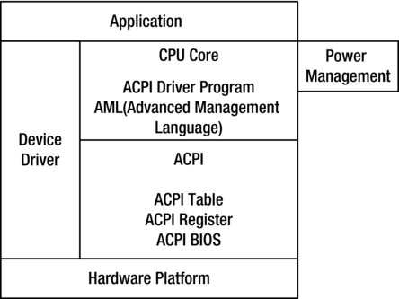
Figure 13-1.
ACPI structure
ACPI supports the following five basic global power states:
- G3: Mechanical off state; the system does not consume power.
- G2: Soft off state; the entire operating system restarts to restore the machine to working conditions. This state has four substates:
- S1: No system context; the missing low wake-up delay state.
- S2: Lost low CPU and system cache status wake-up delay state.
- S3: In addition to the main memory, all other system status is lost; low wake-up delay state.
- S4: Low-power sleep mode; all devices are turned off.
- G1: Sleep state; the system appears to be off; the low-power state. The time required to return to the normal operating state is inversely proportional to the power consumption of the low-power state.
- G0: The working state; the system is fully available.
- Retention state: The system does not comply with ACPI.
The typical power-management program includes a viewer for messages received by ACPI that describe the behavior of the system. Also included is a decision model based on observations to determine power-management behavior.
Popular operating systems and software platforms, such as Windows and Android, all support ACPI.
Low-Power Operating System States
When the task is idle (or in an inactive state), the computer system achieves energy savings by entering the various low-power operating modes. These low-power modes are sometimes collectively referred to as sleep mode. They are between the states in which system is fully booted and completely closed, with a variety of forms; each form has its own characteristics to meet users’ various needs. These modes are described in the following sections.
Standby
When the system is in standby mode, it cuts off power to the hardware components, thereby reducing computer power consumption. Standby cuts off peripherals, the monitor, and even the power of the hard drive, but it retains the power of the computer’s memory to ensure that there is no loss of work data.
The main advantage of standby mode is that recovery time is short—it takes just a few seconds for the system to be restored to its previous state. The disadvantage is that standby mode needs the memory power supply, so memory contents are not saved to the folder and therefore do not affect the running speed of memory reload. However, if a power failure occurs in this mode, all unsaved memory contents are lost. Therefore, standby is also known as suspend to RAM (STR).
When the system is in standby mode, the hard disk and other equipment are in the power-wait state until a wakeup call is received. The power supply, processor, graphics, and other fans are working, and the keyboard indicator is lit. You can press any keyboard key or move the mouse to wake up the computer. The hard disk is repowered, and allows memory, processors, and other devices to exchange data and return to the original mode of operation.
Hibernate
When the system is in hibernate mode, an image of the operating mode is saved to external memory and then the computer is turned off. When you turn on the power and reboot, operation reverts to the earlier look: files and documents are arranged as you left them on the desktop.
Hibernate mode is deeper than standby mode and thus helps save more power, but the computer takes longer to restart. In addition, hibernate mode includes higher security. This is because this mode not only closes the power supply to the peripherals and hard disk but also cuts off the power supply of the RAM memory chips. This mode is also known as suspend to disk (STD).
As the computer enters hibernate mode, before the power is turned off, all data is stored (written) in external memory (usually a hard disk) to the reference file. On coming out of hibernate mode, the system is restored (read) from the reference file, and data is reloaded into memory. In this way, the system reverts to the previous operating mode. Because hibernate mode needs to save memory data, the recovery (wake-up) time is longer than with standby mode.
The advantage of this mode is that no power is consumed, and thus you need not be afraid of power anomalies during sleep. It can also save and restore the user state, but this requires the same space on the hard disk as the physical memory size.
Hibernation of a computer system is almost as quiet as regular shutdown; you can completely remove power, and memory data (running) won’t be lost due to a power failure. Compared to standby, hibernation is generally difficult to wake up with an external device; it needs to start the system with a normal boot. However, hibernate mode boots the system without triggering a regular start process: it only needs the hard disk memory mirroring read taken into memory, so it is much faster than a standard boot.
Sleep
Sleep mode combines all the advantages of standby and hibernation. The system switches to the sleep state; all the data in system memory dumps into the hibernation file on the hard disk, and then all power to the equipment in addition to memory is turned off so data in memory is maintained. Thus, restoring power during sleep is not an exception; you can quickly recover directly from the data in memory. If there are power anomalies and the data in memory is lost during sleep, data can also be recovered from the hard disk, but the speed is a little slower. In any case, this model does not result in data loss.
Sleep mode is not always continuously maintained. If the system enters sleep mode for a period of time without being awakened, it may automatically change to hibernate mode and turn off the power supply to the memory to further reduce energy consumption.
Achieving these low-power energy-saving features requires both operating system support and hardware support, such as support for ACPI. Only by combining these features can you achieve the energy savings described. When the idle time (also known as non-active time) reaches a specified length or the battery power is low, the operating system can automatically put your computer system in a low-power state, saving energy for the entire system.
Linux Power-Control Mechanism
Android is based on Linux. Linux has a lot of practical tools for analyzing and reducing power consumption, some of which have been adopted by Android. The following sections describe several types of Linux power control and management, including many aspects of the technology and its components.
Tickless Idle
, sometimes called non-fixed frequency or no empty circulation, is the technology used in the Android Linux kernel to improve its power-saving ability.
The traditional Linux kernel processor uses a periodic timer to record the state of the system, load balance, schedule, and maintain a variety of processor timer events. Early timer frequencies were generally 100 Hz. The new kernel uses 250 Hz or up to 1,000 Hz. However, when the processor is idle, these periodic timed events consume a lot of power. Tickless idle eliminates this periodic timer event in the processor and is also related to the optimization of other timers.
After using tickless idle, the Linux kernel is an empty cycle-free kernel. The kernel still records the time, but using a different approach. There is no longer frequent checking to see if there is work to be done. When the kernel knows there is work to be done, it schedules hardware to issue an interrupt request. Tickless idle technology has another indirect benefit in energy efficiency: you can make better use of virtual technology, which means the virtualization software is not interrupted unnecessarily or too often.
Tickless idle provides the necessary kernel foundation for excellent power savings. However, it also requires collaboration with the application. If the application does not follow the principle of low-power design, is badly written, or is using the wrong behavior, it may easily consume or waste the power savings created by tickless idle.
PowerTOP
PowerTOP helps users find applications that consume additional power when the computer is idle. It has a more prominent role for advanced software. Here are PowerTOP’s features:
- Gives recommendations to help users make better use of the system’s various hardware power-saving features
- Identifies culprit software modules that prevent hardware power savings from achieving optimal performance
- Helps developers test their applications and achieve optimal behavior
- Provides adjustment proposals to access low power
A screenshot of PowerTOP running is shown in Figure 13-2.
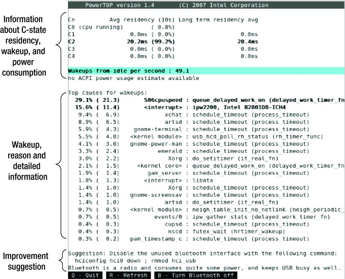
Figure 13-2.
PowerTOP interface example
Many Linux systems on the Intel Atom platform, such as Ubuntu, support the PowerTOP tool. Figure 13-2 shows PowerTOP running in Ubuntu. Android does not support this tool yet (it is not known if Android will support it in the future). However, Intel has recently provided tools on Android with functionality similar to that of PowerTOP, as introduced in the following sections.
Intel Power-Optimization Aids
Intel has introduced some aids to help with low-power design for Android applications. The role of these auxiliary tools is similar to the profiler with regard to performance optimization, VTune, and so on. With these tools, you can do tool-assisted optimization on the application’s power consumption. In other words, the aids offer guidance or counseling. To achieve real optimization, you must rewrite the code in accordance with low-power design principles (described in the following sections).
Intel developed the Intel Mobile Development Kit for Android for system or middleware developers to create Android system or middleware software that takes advantage of the latest innovations Intel platforms have to offer. This kit provides access to an x86 (Intel Architecture) based tablet, development tools designed to seamlessly create software for this device, and technical collateral about the OS, tools, system software, middleware, and hardware. You can purchase the kit at
https://software.intel.com/en-us/intel-mobile-development-kit-for-android
.
You can also use the Intel Graphics Performance Analyzers (GPA): free, low-power auxiliary tools provided by Intel to help Android applications save power. Intel GPA–assisted speed and performance optimization features were introduced in the previous chapter. This section emphasizes its auxiliary functions for power optimization.
Indicators related to the machine’s power consumption include CPU frequency, current charging, current discharging, and so on. CPU frequency reflects the operating frequency of the processor in the CPU column. As mentioned in the section “The Basics of Consumption,” the operating frequency directly reflects the dynamic power consumption of the processor: the higher the frequency, the higher the processor power consumption. Therefore, by observing CPU frequency, you can analyze the (dynamic) power consumption of the processor when the application is running.
When analyzing the CPU frequency, you can drag and drop the CPU in the CPU Column XX Frequency indicator items to the display window for observation. Figure 13-3 shows the CPU frequency during an analysis of a sample app, MoveCircle.
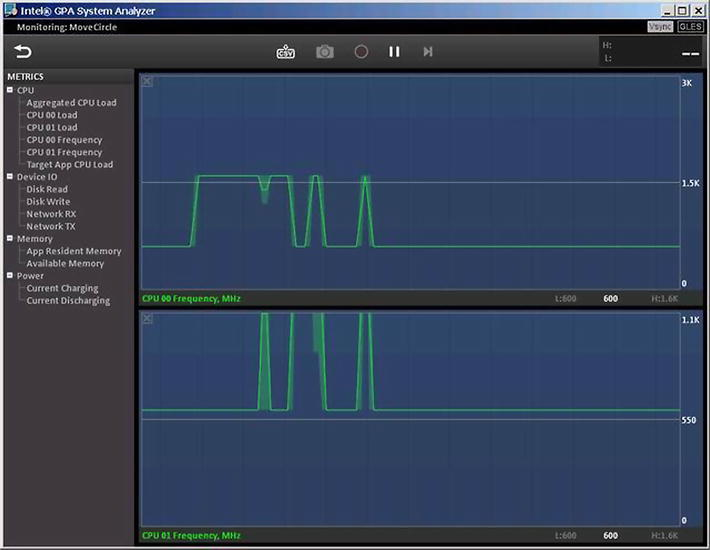
Figure 13-3.
Intel GPA CPU frequency analysis
The vertical axis in Figure 13-3 is the operating frequency of the CPU; the unit is megahertz (MHz). In this example, the target machine is a Lenovo K800 Smartphone with an Intel Atom processor, two logical CPUs, and two display windows. As you can see, when the application has a computing task, the CPU increases the frequency to cater to the needs of the calculation; when computing tasks are light, the CPU reduces the operating frequency to save power.
The Current Charging and Current Discharging indicators reflect the charge and discharge conditions. Unlike CPU frequencies, these reflect the machine’s overall power consumption. Current Discharging indicates the discharge status; this is a direct reflection of the machine’s power consumption, and it is the direct target you want to observe. However, during the Intel GPA analysis, the target machine is connected to the host via a USB cable, so the host becomes a power supply and is charging the target machine (phone). Thus you should not ignore the Current Charging indicator when analyzing overall machine power consumption.
While analyzing overall machine power consumption, you can drag and drop the power bar under the corresponding Current Charging (top graph) and Current Discharging (bottom graph) index entries to the display window to observe them. Figure 13-4 shows an analysis of the machine’s charging and discharging using the sample MoveCircle app.
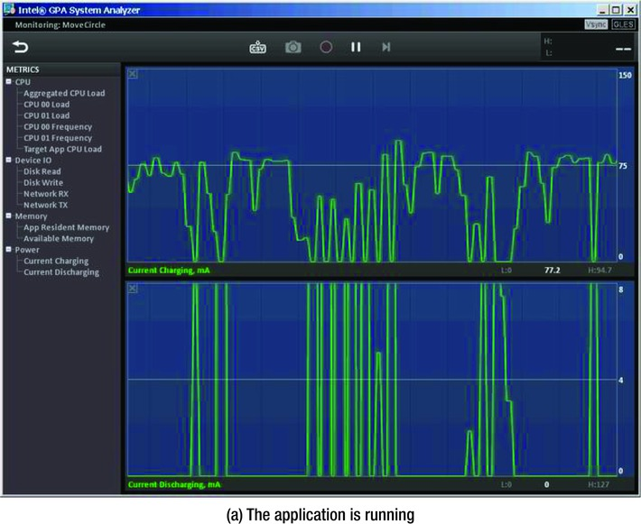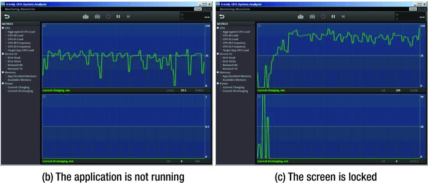
Figure 13-4.
Intel GPA machine overall power analysis
The vertical axis in Figure 13-4 is in the current in milliamperes (mA). When the voltage is constant, it is a direct reflection of power consumption. When no application is running, the charge (Current Charging) maintains a natural fluctuation of the state, and the discharge (Current Discharging) stays almost 0 for the low state, as shown in Figure 13-4(b). When the application is running, due to the increase in the dynamic power consumption of the CPU, the discharge no longer maintains the 0 state. Discharge at the same time lowers the value of the charge; this is visible in Figure 13-4(a). When the user locks the screen, the screen may go blank and running applications may also be suspended, quickly reducing the CPU’s dynamic power consumption; this brings the discharge almost back to the 0 state, and the charge rises. This process is shown in Figure 13-4(c).
As you can also see in the previous figures, the Intel Atom processor and Android have load-sensing power-management capabilities, and they work together on dynamic power management. When the application is not running or is completing low-power computing tasks, the system perceives this change, and the hardware (processor) control technology jumps in and reduces power consumption. It usually does so by lowering the operating frequency/voltage using EIST.
Low-Power Considerations in Application Design
Hardware and operating systems provide good technical support for low power consumption by the system, and this can also be accomplished using appropriate management mechanisms and means of control. However, the ultimate low-power target requires the close cooperation of the application. If the application is developed without following the principle of low-power design, the final program may either not use the system’s low-power potential or waste power, cancelling out the power savings from the low-power technology provided by the hardware and operating system. Therefore, this chapter emphasizes the importance of low-power requirements and principles in application design.
Low-power design requirements and principles in application development involve many technologies and methodologies. Let’s examine the major principles and recommendations.
The Most Basic Principle of Low-Power Optimization
The most basic principle of low-power optimization is to minimize the working hours of the processor and various peripherals. When a peripheral is not required and processor operation is not required, the best way to reduce their power consumption is to turn them off.
Because the processor uses a larger proportion of the total power consumption of the system, the processor’s working hours need to be as short as possible; it should spend longer in idle mode or power-down mode. This is a software design key to reducing the mobile system’s power consumption.
General Recommendations: High Performance = Low Power Consumption
In most cases with fixed voltage, running at peak velocity (high frequency) for a short period of time with a long time in a deep idle state is much more energy efficient than a long run at a medium operating frequency with a mild idle state. Therefore, for the same task, much less electricity is consumed if your app runs to completion in the shortest possible time and then enters an idle state, rather than runs over a longer time to completion before entering a short idle state.
A fast algorithm can also reduce power consumption, which follows the recommendation that high performance is equal to low power consumption.
Use Low-Power Hardware as Much as Possible to Achieve the Task
The same task can be accomplished with different types of hardware, and different hardware has different power-consumption overhead. When your app has the option to choose different hardware to run the same task, you should choose low-power hardware.
In general, the energy consumption of the register access is the lowest; and the energy consumption of cache access is lower than the energy consumption of main memory access. Therefore, the program design should try to follow these suggestions:
- Use the register as effectively as possible.
- Analyze the behavior of the cache to discover the main cache conflict.
- Use page-mode access as much as possible in the storage system.
Polling Is the Enemy of Low-Power Optimization
Programs waiting for state changes or accessing peripheral devices may use polling; this method is sometimes referred to as rapid rotation or spinning code. Polling allows the processor to perform a few instructions repeatedly. Power consumption is roughly equal to heavy computing tasks, and its role is just waiting for a status change; but the waiting period cannot allow the processor to enter an idle state, resulting in a lot of wasted power. Therefore, in low-power design, you should try to avoid using polling and instead use alternative methods. For example, you should use interrupts instead of polling access peripherals. In the client/server collaboration model, you should change the client inquiry service to have the server actively push services to the client. For thread synchronization, if you need to query the status change, you should use the operating system event or semaphore.
For example, suppose Thread 2 wants to access a resource. The ability to access is determined by the access-control variable canGo. Thread 1 is responsible for on or off access control of variables canGo. If this is achieved by the polling statement, the thread code may be as follows:
volatile boolean canGo = false; // Shared variables
// The code of thread 1 // The code of thread 2
void run() void run()
{ {
......
canGo = true; while (!canGo);
// Allow thread 2 to access a resource // Wait canGo Change to true
...... ...... // Access to the resource code
} }
In the previous code, the Thread 2 while statement is typical of polling; it consumes a lot of processor time to prevent entry into the idle sleep state. You can change to a Java wait-notify mechanism to achieve the same functions:
volatile boolean canGo = false;
Object sema; // The synchronization lock canGo variable
// The code of thread 1 // The code of thread 2
void run() void run()
{ {
synchronized(sema){ synchronized(sema){
canGo = true; // Allow thread 2 to access a resource while (!canGo)
sema.notifyAll() sema.wait();
} }
..... ...... // Access to the resource code
} }
After being replaced by the wait-notify code, thread 2 has no rapid rotation of the polling statement: each time it checks the canGo variable in a loop, if the conditions are not met, it enters the suspend state and releases the CPU. So, the CPU load is not wasted on the thread. When the CPU has no other tasks, the load soon drops to a low state. When low load to the processor is detected, the system takes measures to reduce power consumption. This could not be done with the rapid rotation of polling mode before the optimization.
Event-Driven Programming
In addition to implementing the software design methodology, low-power programs should always follow the event-driven model of program design if possible. Event-driven programming means the program is designed to respond to events: when an event arrives, the application runs to handle the event; when no event arrives or the event is finished, the program gives up the processor and changes to a sleep state. Here the event is referred to as a generalized event, including user input, network communication events, and process/thread synchronization events.
When the event-driven design process is used, processor utilization is particularly high: programs only run when there are real things to deal with, and they free the processor when there is nothing to do. When the processor is in an idle state, the operating system and hardware can detect the idle in a timely manner and initiate the operation to reduce power consumption.
Reduce Periodic Operations Similar to Polling in Application Programs
Earlier you saw that the polling operation consumes unnecessary energy. Unnecessary programming of periodic triggers or running operations can have an effect similar to polling and consume power unnecessarily.
Tickless idle, as discussed earlier, is an operating system kernel improvement that follows this principle; it removes periodic timed operations from the kernel. In addition, Linux applications have many unnecessary periodic triggers or running operations, such as these:
- Mouse movement, once per second. This is commonly used in screensavers.
- Changes in volume, 10 times per second. This is commonly used in the mixer program.
- The next minute, once per second. This clock program is commonly used.
- USB reader, 10 times per second. This daemon is commonly used.
- Other application data and conditions that change:
- More than 10 times per second (web browser)
- More than 30 times per second (GPS signal acquisition applications)
- More than 200 times per second (the Flash plug-in)
These unnecessary triggers and operations cause the system to wake up from an idle state. When ported to Android, such operations should be noted and carefully avoided or improved; otherwise they can easily offset power-consumption savings.
Low-Power Recommendations for Data Acquisition and Communications
When designing communication modules, try to improve the communication rate. When the communication rate is increased, it means communication time is shortened and fewer high-power communications, reducing total power consumption.
Similarly, when using Wi-Fi communication, you should use burst mode to transmit data, which can shorten the communication time (especially when sending data). It is easy for Wi-Fi devices to enter an idle state as soon as possible.
Establishing a Power-Aware Program
Power for Android devices often toggles between being connected to an external power supply and using battery power. The power requirements of the software for both power states are completely different: the former is power-insensitive but requires that priority be put on performance most of time; the latter is power-consumption-sensitive and therefore needs to strike a balance between performance and power consumption. Thus the application should detect the type of power supply and make adjustments to adapt to power-related changes.
In addition, some power-management factors may affect software behavior, such as when the device’s battery is below a certain threshold and the device enters the closed state and automatic sleep, and so on. Application design should take into account environmental changes brought about by these power-management events, pay attention to the possible impact of these factors, and respond appropriately. For example, ongoing processing of time-consuming operations (such as lengthy floating-point operations, the query circulating system, and complex graphics reproduction) can be interrupted or suspended by power-management events. One of the countermeasures is to save the scene and make sure the environment is allowed time to recover from the interrupt status.
In addition, you can develop a kind of defensive programming for power, such as advance consideration or prediction of what kind of task or application the user will start (for example, playing a movie); or determining in advance whether there is enough battery power to complete the task, and if not, alerting the user at the start of the task.
Case Study 1: Intel GPA Assisted Power Optimization for an Android Application
Following is a case study to demonstrate a comprehensive approach that uses the Intel GPA power-analysis tools to rewrite and optimize an application that has high power consumption, in accordance with low-power design principles.
Original Application and Intel GPA Power Analysis
The example application runs for a specified period of time (20 seconds). This application, without low-power optimized code, is called PollLast. The application design calls for it to get the current time through the static function currentTimeMillis of the Java System class; the current time plus the duration of the runtime specified in the program is equal to the end of the program run. The program then gets the current time in the looping function currentTimeMillis and compares it with the program end time. If the current time exceeds the program end time, the program ends the loop and finishes the program. Because the entire task takes a long time to process, you run the program as a worker thread so it does not affect the response of the main interface. The main interface controls the start of the task.
The application’s operation interface is shown in Figure 13-5.
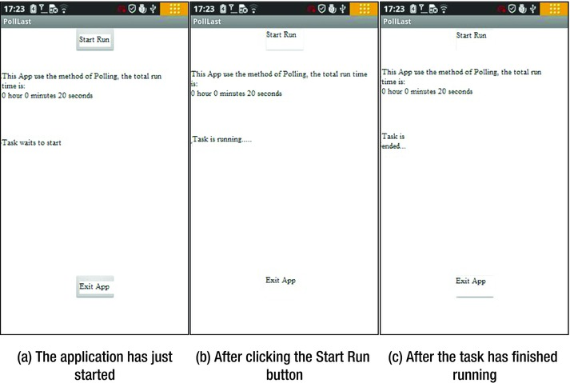
Figure 13-5.
Separate PollLast applications running in the interface
The main steps to create the application are as follows:
1.
Create a new project called PollLast. Set the proposed project property to use the default value, and select the Build SDK version which supports the x86 API.
2.
Edit the main layout file, and place two Buttons and two TextViews on the layout; one is used to display the operating status of the task thread, as shown in Figure 13-6.
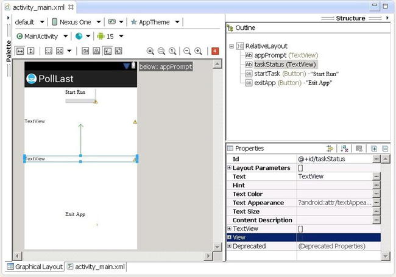
Figure 13-6.
The main layout of the application
3.
Create a new task thread class MyTaskThread, which will run a specified time. Edit the source code file MyTaskThread.java as follows:
1. package com.example.polllast;
2. import android.os.Handler;
3. import android.os.Message;
4. public class MyTaskThread extends Thread {
5. private Handler mainHandler;
6. public static final int MSG_FINISHED = 1;
7. public static final int lasthour = 0; // The number of hours the program is running
8. public static final int lastmin = 0; // The number of minutes of the program to run
9. public static final int lastsec = 20; // The number of seconds the program is running
10. @Override
11. public void run()
12. {
13. long start_time = System.currentTimeMillis();
14. long millisecduration = ((lasthour * 60 + lastmin) * 60 + lastsec)*1000;
15. long endtime = start_time + millisecduration;
16. long now;
17. do {
18. now = System.currentTimeMillis(); // Polling
19. } while (now < endtime);
20. Message msg = new Message();
21. msg.what = MSG_FINISHED;
22. mainHandler.sendMessage(msg);
23. }
24. public MyTaskThread(Handler mh)
25. {
26. super();
27. mainHandler = mh;
28. }
29. }
The gray background marks the major code segments where changes are made. In lines 7–9, you assign three constants lasthour, lastmin, and lastsec, respectively, as the task’s running time in hours, minutes, and seconds. The code in lines 13 and 14 is a core part of the task. In lines 13–15, you set the task start time, duration, and end time, in milliseconds. Line 16 defines the current-time variable now. In lines 17–19, you use a loop to poll and compare time. Each cycle first gets the current time and then compares it with the end time; if the current time is greater than the end time, the loop is ended.
This is typical polling code. The loop body is only a statement to query the current time, so the loop is very fast and consumes lots of processor computing resources.
4.
Edit the main activity class source code file MainActivity.java, and let it control running the task thread. The code sections are almost the same as the MainActivity example’s SerialPi class code (see Chapter 8).
5.
Modify the project’s AndroidManifest.xml file to meet the Intel GPA monitoring requirements.
Now you can deploy the application to the target machine. This example uses the Lenovo K800 mobile phone as a test target.
Figure 13-7 and Figure 13-8 show the analysis using Intel GPA. This example analyzes the main monitor CPU frequency (the CPU XX Frequency indicator) and the charge or discharge (Current Charging and Current Discharging indicators). You click the Start Run button to start running the task and recording the Intel GPA monitoring information.
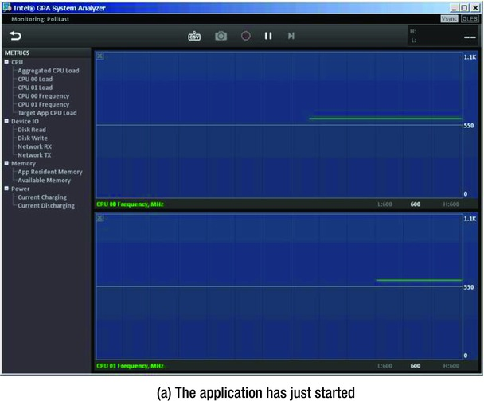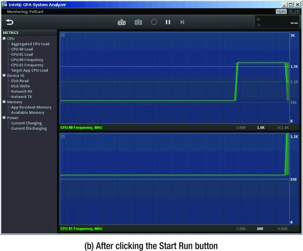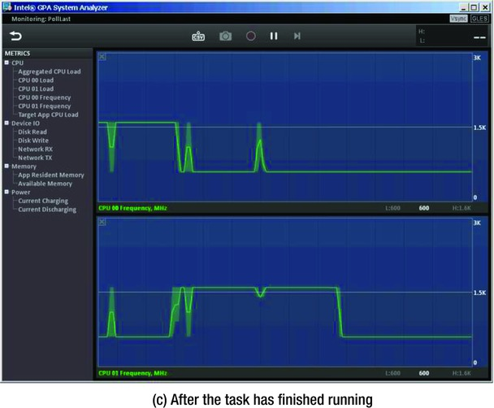
Figure 13-7.
PollLast Intel GPA CPU frequency analysis
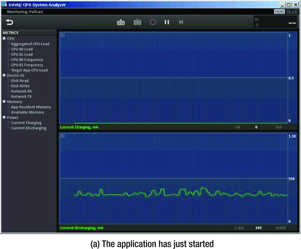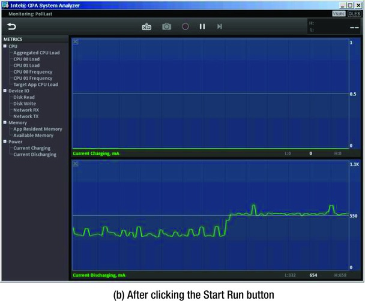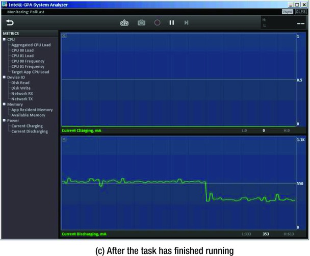
Figure 13-8.
PollLast Intel GPA charge/discharge analysis
From the CPU frequency chart in Figure 13-7, you can see that CPU frequency jumps from 600 MHz up to 1.6 GHz after starting the task and drops back to 600 MHz after running the task. Of course, both logical CPU frequencies do not jump up to 1.6 GHz when the task is running: they have a complementary relationship. When the task is running, only one CPU frequency jumps to the highest values. The main reason for this complementary effect is that this example task has only one worker thread.
The machine’s charge is shown in Figure 13-8 in a map view of discharge conditions. The discharge maintained a level below 400 mA before starting the task, as shown in Figure 13-8(a). After starting the task, the discharge jumped to levels above 550 mA. After running the task, discharge level returned to 400 mA or less. The phone was fully charged before running, so the entire example process was always charged in a low state of approximately 0. Discharge reflects the charge level of the machine under the same total power consumption. Running the task led to a dramatic increase in power consumption.
Optimized Applications and an Intel GPA Power Analysis
Through the code analysis of the PollLast application, you know that using a polling statement causes machine power consumption to rise, especially in MyTaskThread.java lines 17–19. You need to rewrite this segment by applying the low-power application design principles as previously described and change the polling code. You can create an optimized solution that lets the thread sleep the specified time instead of polling. This application is an improved version based on PollLast, with these changes:
1.
Create a new project SleepLast. Set the proposed project property to use the default value, and select the Build SDK which supports the x86 API.
2.
Copy the PollLast main layout file to the project, and replace the original layout of the project file.
3.
Copy the original application MyTaskThread.java to this project, and modify its contents as follows:
1. package com.example.sleeplast;
2. import android.os.Handler;
3. import android.os.Message;
4. public class MyTaskThread extends Thread {
5. private Handler mainHandler;
6. public static final int MSG_FINISHED = 1;
7. public static final int lasthour = 0; // The number of hours run
8. public static final int lastmin = 0; // The number of minutes run
9. public static final int lastsec = 20; // The number of seconds to run
10. @Override
11. public void run()
12. {
13. long millisecduration = ((lasthour * 60 + lastmin) * 60 + lastsec)*1000;
14. try {
15. Thread.sleep(millisecduration);
16. } catch (InterruptedException e) {
17. e.printStackTrace();
18. }
19. Message msg = new Message();
20. msg.what = MSG_FINISHED;
21. mainHandler.sendMessage(msg);
22. }
23. public MyTaskThread(Handler mh)
24. {
25. super();
26. mainHandler = mh;
27. }
28. }
The first line of code is the declaration of the application package.
The main changes are from lines 13–18. Here you use the static function sleep of the Thread class to specify how long the thread should sleep. The application calculates the sleep time in milliseconds in line 13. Because sleep may throw an InterruptedException exception, you put the function into a statement block.
4.
Copy the MainActivity.java from the original application to cover the same documents. Change its package-declaration line to
package com.example.sleeplast;
5.
Modify the project’s AndroidManifest.xml file to match the Intel GPA monitoring requirements.
Now you can deploy the application to the target machine. Again, this example uses a Lenovo K800.
In the real world, you only need to modify the source code of the original application to achieve the optimization for low-power consumption—you don’t need to create a separate application. For example, in this case, you would only need to do step 3. This example creates an optimized version of the application to highlight the differences.
Following the same procedure as with the original application, you can use Intel GPA to analyze the optimized application. The results are shown in Figure 13-9 and Figure 13-10.
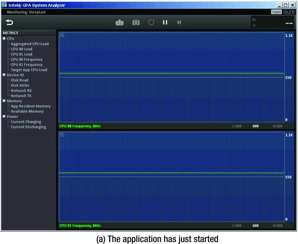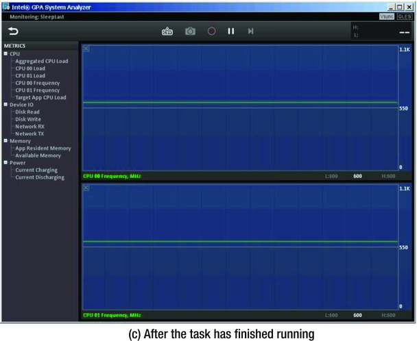
Figure 13-9.
Intel GPA CPU frequency analysis of the application
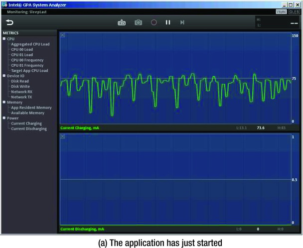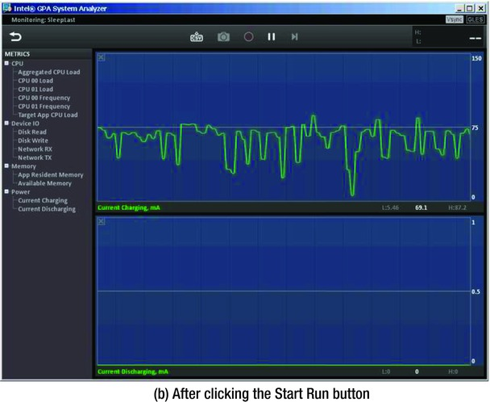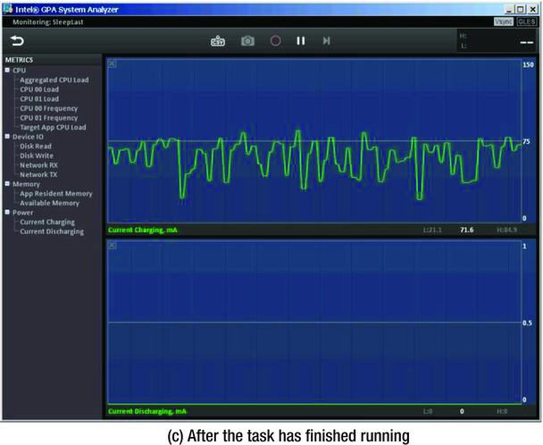
Figure 13-10.
Intel GPA charge/discharge analysis of
In Figure 13-9, compare the graph when the task has not yet started (Figure 13-9(a)) and graph when the task is complete Figure 13-9(c)): the processor frequency does not change (Figure 13-9(b)) when the task runs. Essentially, all three states have the same frequency and remain at a low level of 600 MHz. This reflects the fact that the processor’s dynamic power consumption before, during, and after the process did not change significantly and maintained low load levels.
Figure 13-10 reflects overall machine power consumption, which is also consistent. Before starting the task (Figure 13-10(a)), during the running of the application (Figure 13-10(b)), and at the end (Figure 13-10(c)), discharge maintained a low level of approximately 0. The graph representing charging did not change significantly before, during, or after the application ran. Compared with PollLast, which caused significant overall power consumption, the optimized SleepLast application achieves an optimized power-saving result.
Case Study 2: Timer Optimization and Intel GPA Power Analysis
This section introduces another power-optimization solution: the timer method. You use Java’s Timer and TimerTask to implement a timer. The timer measure the specified time and notifies the task that it should end when a specified time has passed.
Follow these steps to create the application:
1.
Create a new project called TimerLast. Set the proposed project property to use the default value, and select the Build SDK version that supports the x86 API.
2.
Copy the main layout file from PollLast to this project, and replace the layout file.
3.
Copy MainActivity.java from PollLast to this project, and modify its contents as follows:
1. package com.example.timerlast;
2. import android.os.Bundle;
3. import android.app.Activity;
4. import android.view.Menu;
5. import android.widget.Button;
6. import android.view.View;
7. import android.view.View.OnClickListener;
8. import android.os.Process;
9. import android.widget.TextView;
10. import android.os.Handler;
11. import android.os.Message;
12. import java.util.Timer;
13.
14. public class MainActivity extends Activity {
15. private TextView tv_TaskStatus;
16. private Button btn_ExitApp;
17. private Handler mHandler;
18. private Timer timer =null; // Timer
19.
20. @Override
21. public void onCreate(Bundle savedInstanceState) {
......
35. final Button btn_StartTask = (Button) findViewById(R.id.startTask);
36. btn_StartTask.setOnClickListener(new /*View.*/OnClickListener(){
37. public void onClick(View v) {
38. btn_StartTask.setEnabled(false);
39. btn_ExitApp.setEnabled(false);
40. tv_TaskStatus.setText("Task operation...");
41. startTask();
42. }
43. });
......
58. }
......
66. private void startTask() {
67. long millisecduration =
68. ((MyTaskTimer.lasthour * 60 + MyTaskTimer.lastmin) * 60 + MyTaskTimer.lastsec)*1000;
69. timer = new Timer(); // Creating Timer
70. timer.schedule(new MyTaskTimer(mHandler), millisecduration); // Set the timer
71. }
......
79. }
Lines 35–43 are the response code when the Start Run button is clicked. The key code line is line 41, which calls the custom function startTask. Lines 66–71 implement this function code. The program first calculates the total number of milliseconds for the timing. In line 69, the timer is created. Line 70 sets the timer and calls back the MyTaskTimer object when timing ends.
4.
Create a new class, and let it inherit from the TimerTask class. It is responsible for notifying the activity interface that the task has been completed. Edit the source code file MyTaskTimer.java as follows:
1. package com.example.timerlast;
2. import java.util.TimerTask; // TimerTask classes using Java
3. import android.os.Handler;
4. import android.os.Message;
5.
6. public class MyTaskTimer extends TimerTask {
7. private Handler mainHandler;
8. public static final int MSG_FINISHED = 1;
9. public static final int lasthour = 0; // The task of operating hours
10. public static final int lastmin = 0; // The task of operating minutes
11. public static final int lastsec = 20; // The task of operating seconds
12.
13. public MyTaskTimer(Handler mh)
14. {
15. super();
16. mainHandler = mh;
17. }
18.
19. @Override
20. public void run(){
21. Message msg = new Message();
22. msg.what = MSG_FINISHED; // Defined message types
23. mainHandler.sendMessage(msg); // Send a message
24. }
25. }
According to the Java timer framework, when the timer expires, the program callback function of TimerTask runs. The previous code lets the MyTaskTimer class inherit from TimerTask and allows the code for the self-timing timer to expire in the run function. In this case, lines 19–24 hold the callback code that indicates timing is complete and sends a “finished” message to the main interface. The main interface responds to this message in its own handler and displays a message that the task is ended.
Now you can deploy the application to the target machine. As before this example uses a Lenovo K800 smartphone with an Intel Atom processor.
Following the same procedure as previously, you can use Intel GPA to analyze the optimized application, record the GPA monitoring information, and analyze the results, as shown in Figure 13-11 and Figure 13-12.
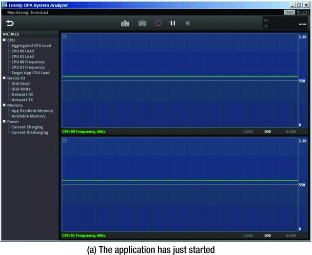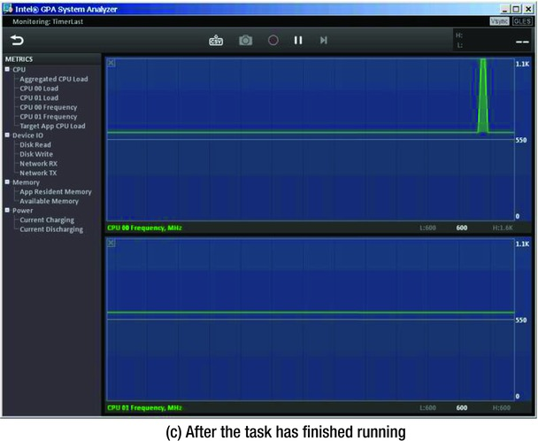
Figure 13-11.
Intel GPA CPU frequency analysis of
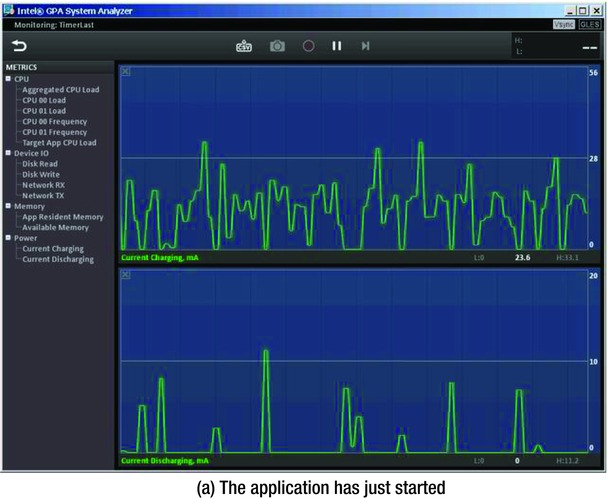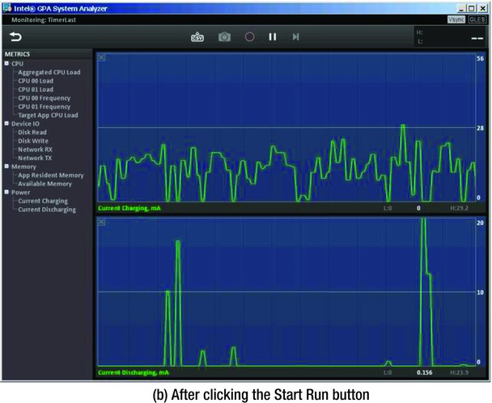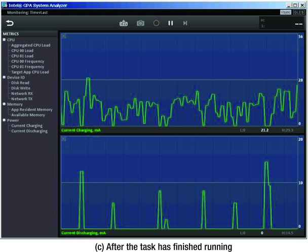
Figure 13-12.
Intel GPA charge/discharge analysis of
The frequency graph shown in Figure 13-11 is similar to the SleepLast graph from Figure 13-9. The processor frequency does not change in Figure 13-11(b) after running the task and has essentially the same frequency as before the task started (Figure 13-11(a)) and after it ended (Figure 13-11(c)). It stayed in the low 600 MHz range. The only difference is a rise in occasional glitches at the end of the task (Figure 13-11(c)). The processor’s dynamic power consumption did not change significantly before, during, and after the process: it maintained low load levels.
Figure 13-12 shows that overall machine power consumption is consistent with Figure 13-11. Of course, the TimerLast graph is not as pretty as the display in Figure 13-10, which shows the performance of SleepLast—discharge graphs always have some glitches. However, the indicator did not change significantly before the task, while the task ran, and after task completion. This proves that running the task did not cause the extra power consumption. Compared with PollLast, which caused significant overall power consumption, the optimized TimerLast application achieved an optimized power-saving result.
Book Summary
In this book, you learned how to develop and optimize Android applications on Intel Atom platforms, as well as how to develop power-efficient applications. Here is a summary of the key concepts:
- Most Android applications written in Java can execute on the Intel Atom platform directly. NDK applications need to recompile native code. If assembly code is included in the application, this portion of the code must be rewritten.
- Make full use of Intel Architecture features to improve your Android application performance.
- Add platform-specific compile switches to make the GCC build code more effective.
- Intel provides various useful tools to help Android developers. Many of them focus on improving performance and can help you optimize your applications.
The common methods of creating Android apps are as follows:
- Java compiled using the Android SDK APIs, to run in the Dalvik VM. Google is releasing a new Android Runtime (ART) for the new Android L OS at the end of 2014.
- Using the latest SDK, testing goes faster if you speed up your Android emulation software with Intel HAXM.
- Created in or ported to NDK. This is the preferred method if you have the C++ code. Native C++ code is compiled into a binary before execution and doesn’t require interpretation into machine language.
If you don’t have an Android development environment (IDE), the new tool suite Intel Integrated Native Developer Experience (INDE) loads a selected Android IDE and also downloads and installs multiple Intel tools to help you make, compile, troubleshoot, and publish Android applications. Go to
https://software.intel.com/en-us/android
to download and use those tools. You can also visit this book’s Apress web page to keep up with updates and any posted errata:
www.apress.com/9781484201015
.